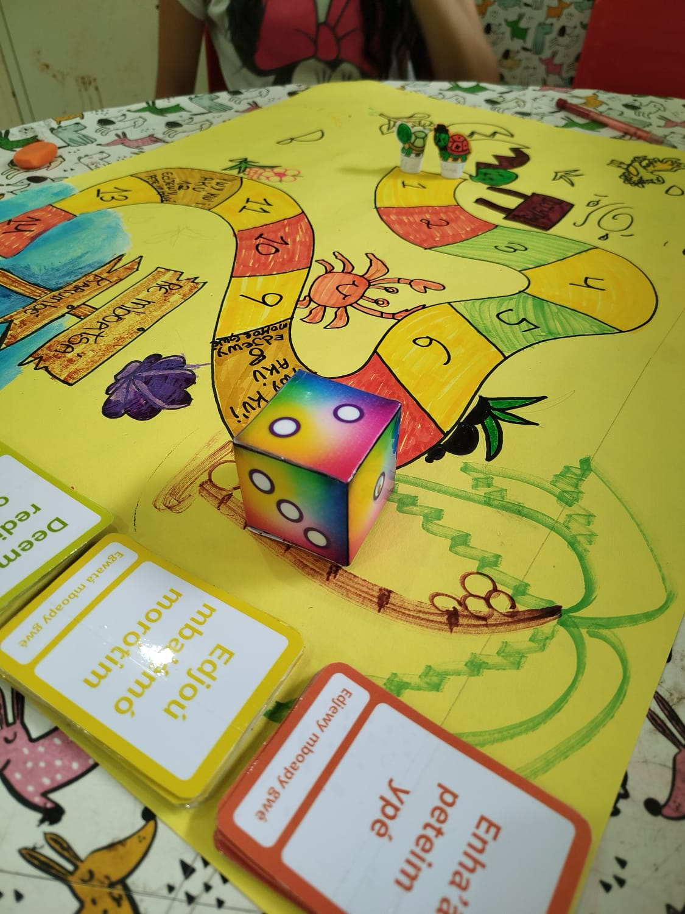
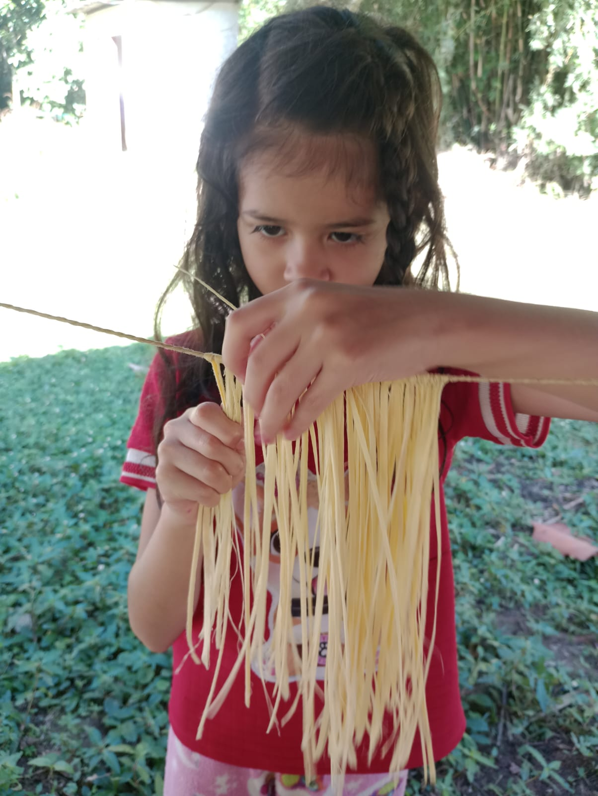

Explore como a cultura Tupi-Guarani ganha vida através de jogos, artes e vivências educativas.

Oficina de Grafismos
Urucum e Jenipapo.

Material LÚDICO
O vocabulário sendo usado em sala de aula através de jogos.

Cultura Viva
Mãos que criam, aprendem e mantém viva a cultura indígena. .
Neste vídeo, exploramos o material: PALAVRAS EM TUPI-GUARANI/VOCABULÁRIO BILÍNGUE, trazendo a pronúncia correta e o significado de cada palavra.